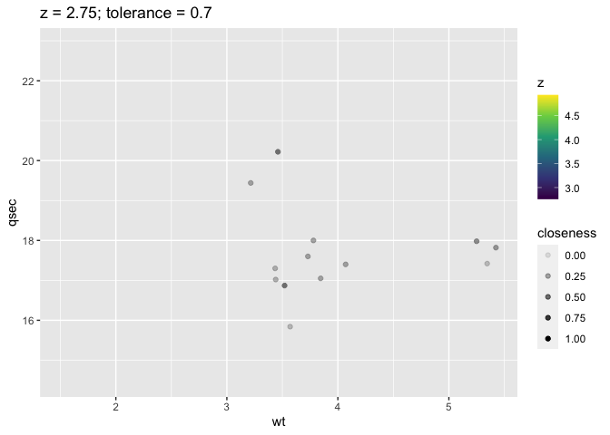
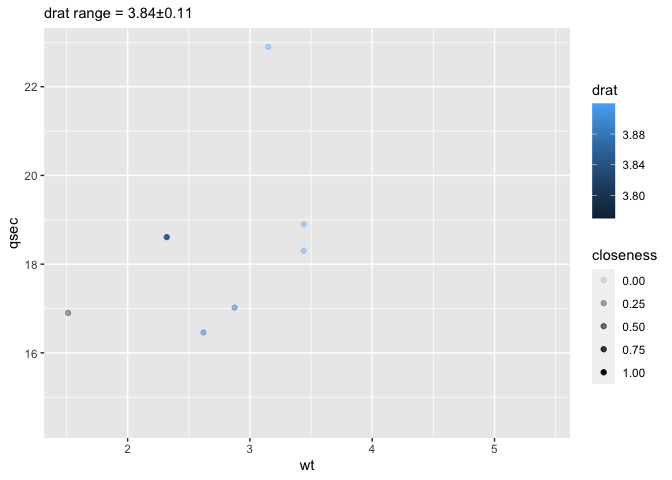
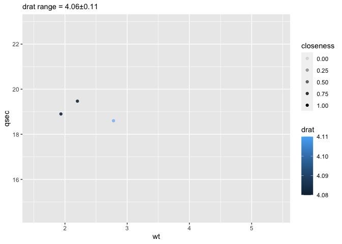
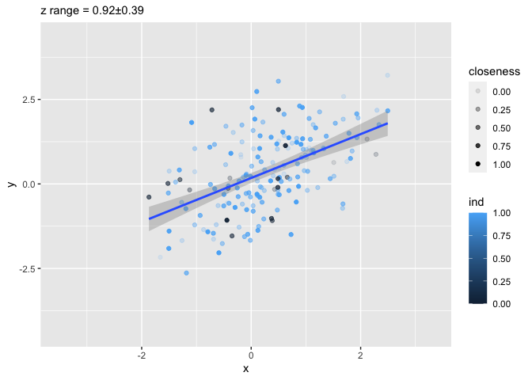
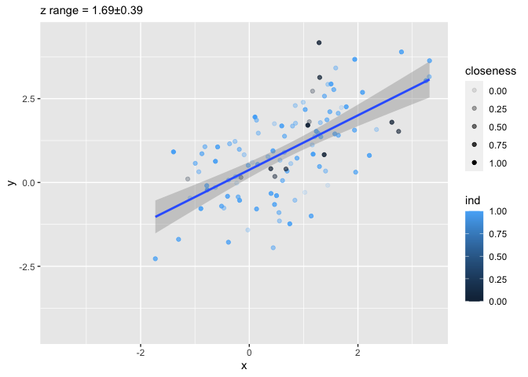
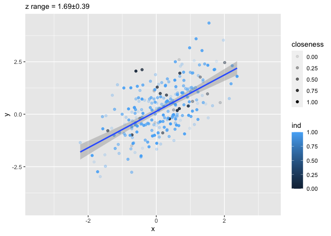

The goal of ggslice is to …
Installation
You can install the development version of ggslice from GitHub with:
# install.packages("devtools")
devtools::install_github("EvaMaeRey/ggslice")Example
This is a basic example which shows you how to solve a common problem:
library(ggslice)
## basic example codeWhat is special about using README.Rmd instead of just README.md? You can include R chunks like so:
library(tidyverse)
#> ── Attaching core tidyverse packages ─────────────────── tidyverse 2.0.0.9000 ──
#> ✔ dplyr 1.1.0 ✔ readr 2.1.4
#> ✔ forcats 1.0.0 ✔ stringr 1.5.0
#> ✔ ggplot2 3.4.1 ✔ tibble 3.2.1
#> ✔ lubridate 1.9.2 ✔ tidyr 1.3.0
#> ✔ purrr 1.0.1
#> ── Conflicts ────────────────────────────────────────── tidyverse_conflicts() ──
#> ✖ dplyr::filter() masks stats::filter()
#> ✖ dplyr::lag() masks stats::lag()
#> ℹ Use the conflicted package (<http://conflicted.r-lib.org/>) to force all conflicts to become errors
z <- 2.75
tolerance <- .7
mtcars %>%
filter(drat < z + tolerance & drat > z - tolerance) %>%
mutate(closeness = (tolerance - abs(z- drat))/tolerance) %>%
ggplot() +
aes(wt, qsec) +
geom_point(aes(alpha = closeness, color = z)) +
labs(title = paste0("z = ", z,"; tolerance = ", tolerance)) +
scale_alpha(limits = c(0, 1)) +
geom_blank(data = mtcars) +
scale_color_viridis_c(limits = range(mtcars$drat))
counter <- 1
slice_z <- function(data, z,
z_q_range = .5, # middle of the range
z_value = NULL,
tolerance = .05, # plus or minus 5% of range
tol_value = NULL){
z_vector <- data |> pull({{z}})
z_range <- range(z_vector, na.rm = T)
z_name <- data |> select({{z}}) |> names()
if(is.null(z_value)){ z_value <- quantile(z_range, z_q_range)}
if(is.null(tol_value)){ tol_value <- (z_range[2]-z_range[1])*tolerance}
z_min <- z_value - tol_value
z_max <- z_value + tol_value
data %>%
dplyr::filter({{z}} <= z_max & {{z}} >= z_min) |>
dplyr::mutate(closeness = (tol_value - abs(z_value - {{z}}))/tol_value)
}
#' Title
#'
#' @param data
#' @param z
#' @param z_q_range
#' @param z_value
#' @param tolerance
#' @param tol_value
#'
#' @return
#' @export
#'
#' @examples
ggslice <- function(data, z,
z_q_range = .5, # middle of the range
z_value = NULL,
tolerance = .05, # plus or minus 5% of range
tol_value = NULL){
z_vector <- data |> pull({{z}})
z_range <- range(z_vector, na.rm = T)
z_name <- data |> select({{z}}) |> names()
if(is.null(z_value)){z_value <- z_range |> quantile(z_q_range)}
if(is.null(tol_value)){tol_value <- (z_range[2]-z_range[1])*tolerance}
z_min <- z_value - tol_value
z_max <- z_value + tol_value
data %>%
dplyr::filter({{z}} <= z_max & {{z}} >= z_min) |>
dplyr::mutate(closeness = (tol_value - abs(z_value - {{z}}))/tol_value) ->
sliced
sliced |>
ggplot2::ggplot() +
ggplot2::geom_blank(data = data) +
ggplot2::labs(subtitle = paste0(z_name, " range = ",
round(z_value, 2),"\u00B1",
round(tol_value,2))) +
# scale_color_viridis_c(limits = range(z_complete, na.rm = T)) +
NULL
}Test it out
ggslice(mtcars, z = drat) +
aes(x = wt, y = qsec) +
geom_point(aes(alpha = closeness, color = drat)) +
# labs(title = paste0("z = ", z,"; tolerance = ", tolerance)) +
scale_alpha(limits = c(0, 1)) +
geom_blank(data = mtcars) 
ggslice(mtcars, z = drat, z_q_range = .6) +
aes(x = wt, y = qsec) +
geom_point(aes(alpha = closeness, color = drat)) +
# labs(title = paste0("z = ", z,"; tolerance = ", tolerance)) +
scale_alpha(limits = c(0, 1)) +
geom_blank(data = mtcars) 
library(tidyverse)
df <- tibble(x = rnorm(1000)) |>
mutate(y = x + rnorm(1000) , z = .2*x + .3*y + rnorm(1000),
ind = sample(0:1, 1000, replace = T, prob = c(.1, .9)))
ggslice(df, z = z) +
aes(x = x, y = y) +
geom_point(aes(alpha = closeness, color = ind)) +
scale_alpha(limits = c(0, 1)) +
geom_smooth(method = lm)
#> `geom_smooth()` using formula = 'y ~ x'
ggslice(df, z = z, z_q_range = .6) +
aes(x = x, y = y) +
geom_point(aes(alpha = closeness,
color = ind)) +
scale_alpha(limits = c(0, 1)) +
geom_smooth(method = lm)
#> `geom_smooth()` using formula = 'y ~ x'
ggslice(df, z = z, z_q_range = .7) +
aes(x = x, y = y) +
geom_point(aes(alpha = closeness, color = ind)) +
scale_alpha(limits = c(0, 1)) +
geom_smooth(method = lm)
#> `geom_smooth()` using formula = 'y ~ x'
# last_plot_new_slice()
last_plot() %+% slice_z(df, z = z)
#> `geom_smooth()` using formula = 'y ~ x'
readme2pkg::chunk_to_r("ggslice")
devtools::check()
usethis::use_package("ggplot2")
usethis::use_package("dplyr")
devtools::build()